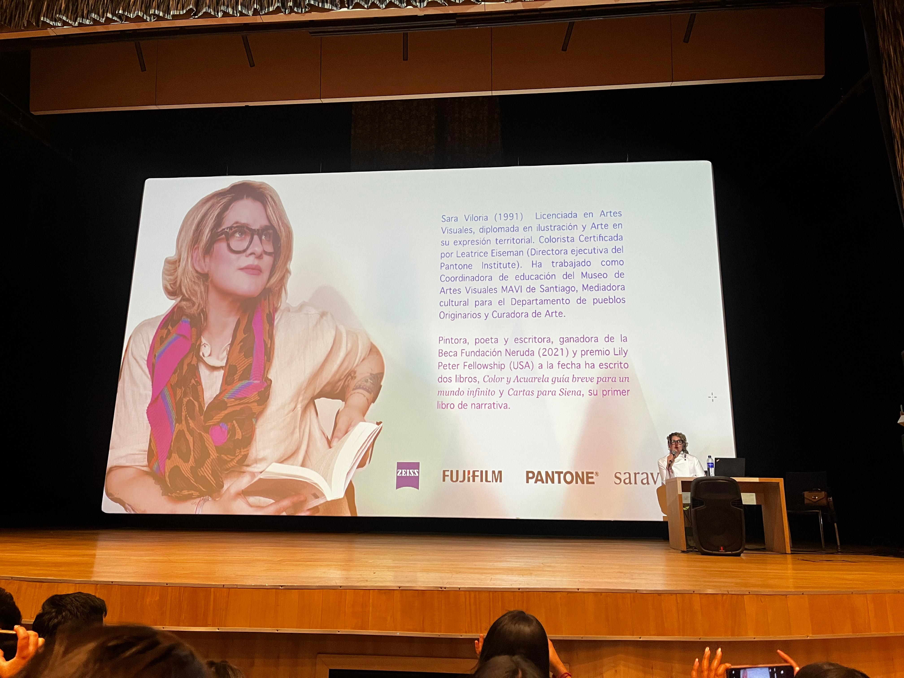
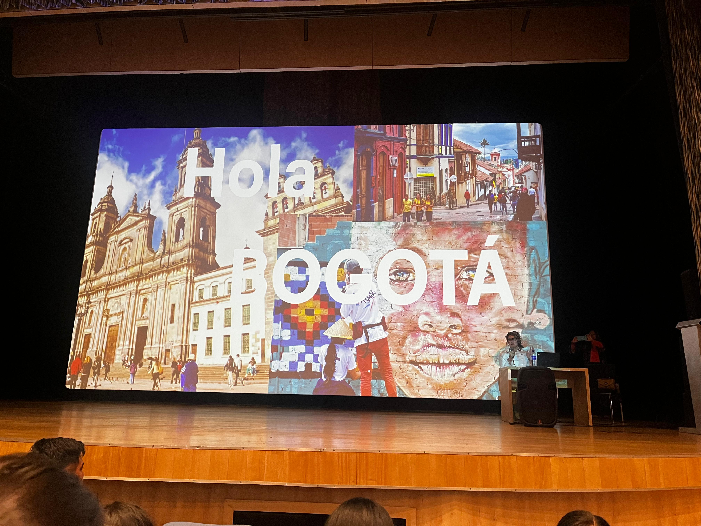
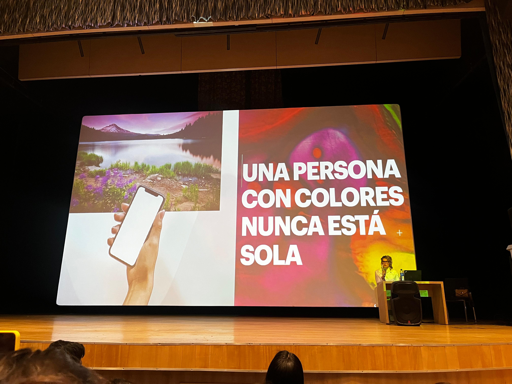
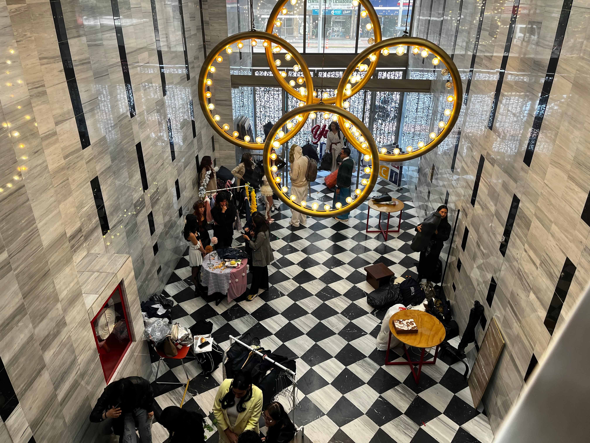
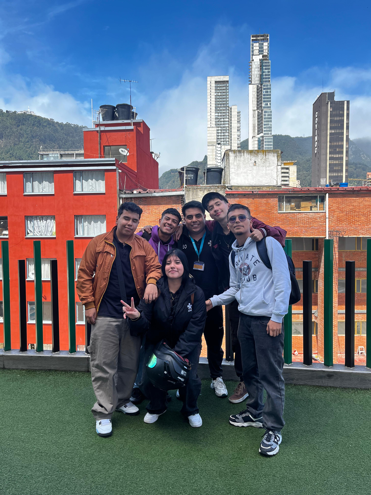
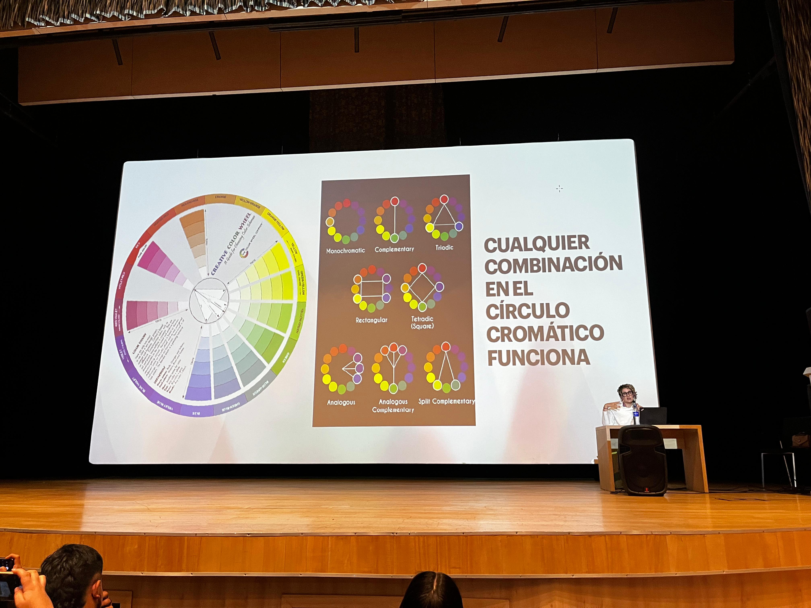
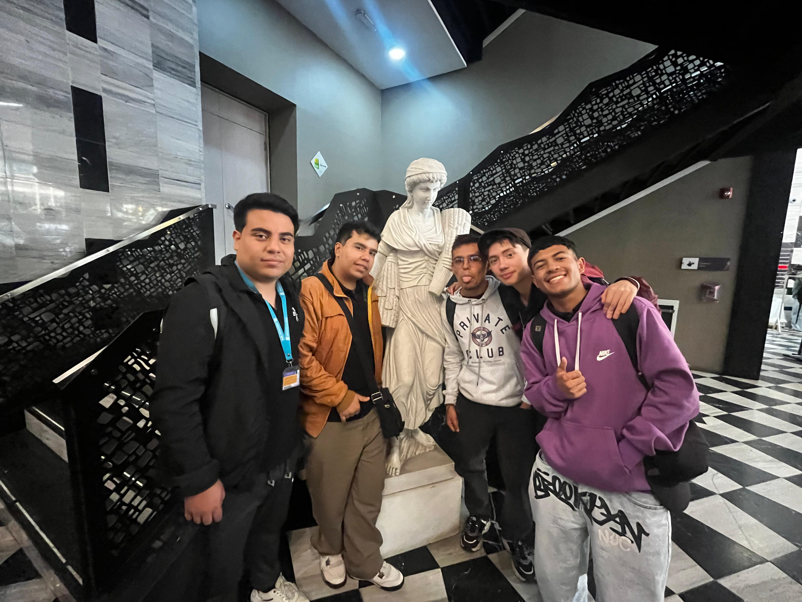
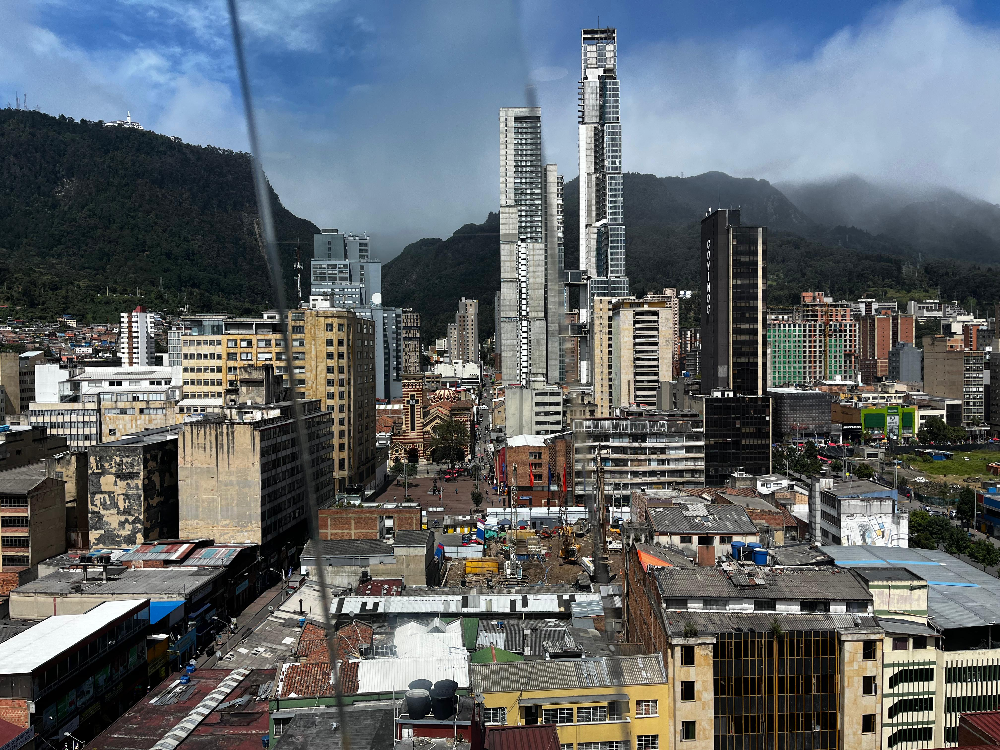
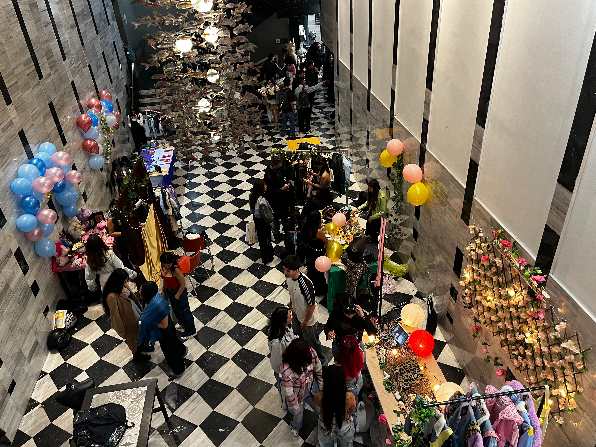
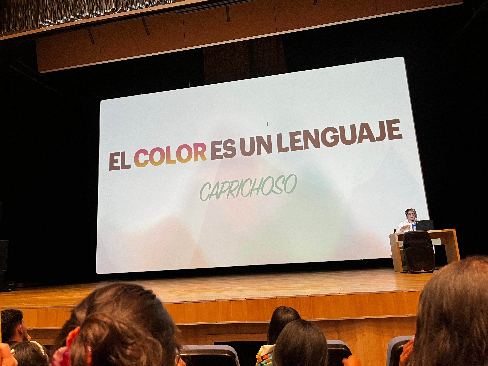

Moda ECCI · Conferencia de Color
El color no es decoración — es lenguaje, identidad y poder.
Explorar
1991
Licenciada en Artes Visuales, diplomada en ilustración y Arte en su expresión territorial. Colorista Certificada por Leatrice Eiseman — Directora ejecutiva del Pantone Institute.
Ha trabajado como Coordinadora de educación del Museo de Artes Visuales MAVI de Santiago, Mediadora cultural para el Departamento de Pueblos Originarios y Curadora de Arte.
Libros
Color y Acuarela: guía breve para un mundo infinito
Cartas para Siena
El color parece una experiencia personal, pero tiene reglas que permiten comunicarlo con precisión.
Áreas gráficas, textil, bordado, tejido, ilustración, diseño, publicidad, colorimetría, alimentaria.
Utilizar el entorno como una fuente de inspiración bien administrada.
"El color es un lenguaje"
— Sara Viloria
Sensación producida por los rayos luminosos que impresionan los órganos visuales y que depende de la longitud de onda.
La apariencia que tienen las cosas y que resulta de la forma en que reflejan la luz. El rojo, el naranja y el verde son colores.
Color + Apellido (Recuerdo) + Sensación. Así comunica Pantone.
Cualquier combinación en el círculo cromático funciona.
Variaciones de tono, matiz y saturación de un solo color.
Colores opuestos en el círculo cromático. Máximo contraste.
Tres colores equidistantes. Vibración y equilibrio visual.
Colores adyacentes. Armonía natural y serena.
Un color base más los dos adyacentes a su complementario.
Cuatro colores en dos pares complementarios. Rica en variación.
Color principal · Color secundario · Color de apoyo
Color, forma y orientación como estructura de atención.
Contraste · Repetición · Alineación · Proximidad
3 elementos: Contexto · Código · Mensaje
Diseño limpio · Navegación rápida · Textos cortos · Botones claros.
Momentos capturados durante la conferencia — haz clic en cada foto para verla.









El nombre del color en estado puro (rojo, azul, amarillo). Es la cualidad que diferencia un color de otro.
La intensidad o pureza de un color. Un color muy saturado es vivo y brillante; poco saturado se acerca al gris.
La claridad u oscuridad de un color. Va del blanco puro al negro absoluto.
Color al que se le ha añadido blanco. Resultado más claro y pastel que el color original.
Color al que se le ha añadido negro, volviéndolo más oscuro y profundo.
Color al que se le ha añadido gris. Reduce la intensidad sin llegar al blanco ni al negro.
Colores opuestos en el círculo cromático. Al usarse juntos generan el mayor contraste posible.
Sistema estandarizado de identificación de colores usado en diseño, moda e impresión a nivel mundial.
Escala de percepción emocional: colores cálidos (rojos, amarillos, naranjas) versus fríos (azules, verdes, violetas).
Diferencia perceptible entre dos colores o tonos. Principio fundamental de diseño que crea jerarquía y legibilidad.
Ciencia que mide y cuantifica el color para garantizar su reproducción exacta en diferentes medios y contextos.
Estudio del impacto emocional y conductual de los colores en las personas. Base de toda estrategia de marca.
"El color es el lugar donde nuestro cerebro y el universo se encuentran.
Una persona con colores nunca está sola. El color no es solo una herramienta visual — es el lenguaje más antiguo que tenemos para comunicar quiénes somos, qué sentimos y cómo vemos el mundo. Aprender a leerlo es aprender a entendernos.